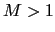
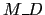
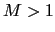
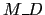

Next: Hybrid Speech/non-Speech Detection Up: Speech/Non-Speech Algorithm Previous: Time Constraints on Speech/non-Speech Contents
The second stage of the process consists of a model-based speech/non-speech detector which obtains an initial segmentation (used for training its models) from the output of the energy-based detector. It then produces the speech/non-speech labels that are used for the speaker diarization task. By training the models from the output of the energy-based detector, it avoids the need for any external training data (or pretrained models).
The model-based decoder is composed of a two states ergodic HMM
(following the same architecture as the speaker Diarization
system), where one state models silence using a single Gaussian
model, and the speech state uses a GMM with  mixtures ().
In each state a minimum duration  is imposed which is
allowed to be different from the duration set in the energy-based
detector. EM-ML is used to train the models and Viterbi to decode
the acoustic data. An iterative segmentation-training is performed
until the overall meeting likelihood stops increasing, then the
system outputs the speech/non-speech labels.
mixtures ().
In each state a minimum duration  is imposed which is
allowed to be different from the duration set in the energy-based
detector. EM-ML is used to train the models and Viterbi to decode
the acoustic data. An iterative segmentation-training is performed
until the overall meeting likelihood stops increasing, then the
system outputs the speech/non-speech labels.
In order for the speech and silence models to represent well the acoustic information, there needs to be enough frames of data in the input segmentation for each model. As seen in Anguera, Wooters and Hernando (2006d) and Anguera, Wooters and Hernando (2006b) the silence data can be modeled with a single Gaussian with a very narrow variance. On the other hand, the speech information is much ``broader'' and dependant on the speakers present in the meeting. It is therefore important for the data used in training the silence model to contain as little speech data as possible. This translates into a very small ``missed speech'' rate requirement in the energy based detector.
user 2008-12-08